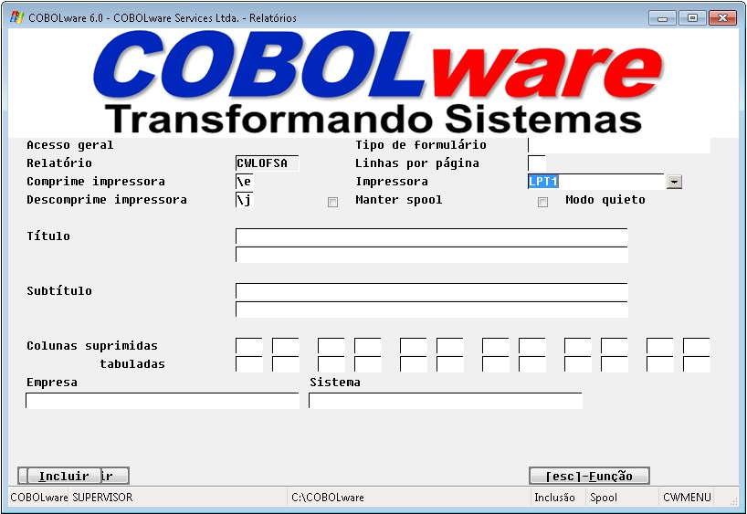
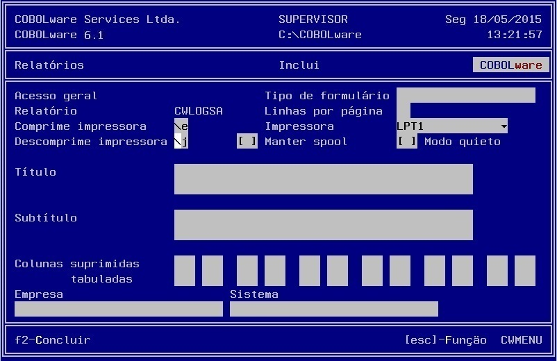

Configuração de relatórios.
| Modo gráfico |
|  |
| Modo texto |
|  |
Relatório
Identificação do relatório informada nos comando Print Report e Spool File ou na definição de relatórios do Relator.
Comprime impressora
Programação de estilo de impressão a ser usada no relatório.
Descomprime impressora
Programação de estilo
de impressão padrão.
Tipo de formulário
Lembrete de alteração de formulário no momento da impressão.
Linhas por página
Substitui o tamanho da página definido pelo programador.
Impressora
Define impressora
específica para impressão direta (sem utilizar spool).
Manter spool
Habilita a criação de uma cópia do relatório em spool mesmo quando direcionado direto
para impressora.
Modo quieto
Suprime todas as mensagens, lembretes e indicadores de progresso durante a geração e
impressão.
Título/Subtítulo
Substitui os títulos definidos pelo programador.
Colunas suprimidas
Indica faixas de colunas iniciais e finais que devem ser suprimidas do relatório. São
permitidas até 5 faixas. A supressão de uma coluna não provoca deslocamento, o
conteúdo é substituído por espaços em branco.
Colunas tabuladas
Indica faixas de colunas iniciais e finais que devem ser tabuladas no relatório, são
permitidas até 5 faixas. O comando Print Report entende tabulação como substituir por
espaços em branco quando o conteúdo da coluna se repete em relação à linha anterior.
Exemplo: supondo que a coluna vencimento ocupe as posições de 1 a 10 e tenha sido declarada como tabulada:
| Normal | Tabulada |
| 01/05/2001 100,00 01/05/2001 200,00 01/05/2001 300,00 02/05/2001 150,00 02/05/2001 250,00 02/05/2001 350,00 |
01/05/2001 100,00 200,00 300,00 02/05/2001 150,00 250,00 350,00 |
Empresa/Sistema
O comando Print Report utiliza os
nomes de Empresa e Sistema configurados no
gerenciador para efeito de cabeçalho. Estes atributos permitem que tais nomes sejam
substituídos.
Veja também